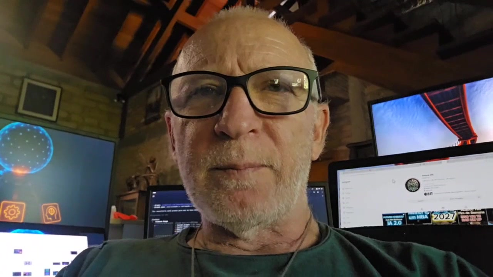
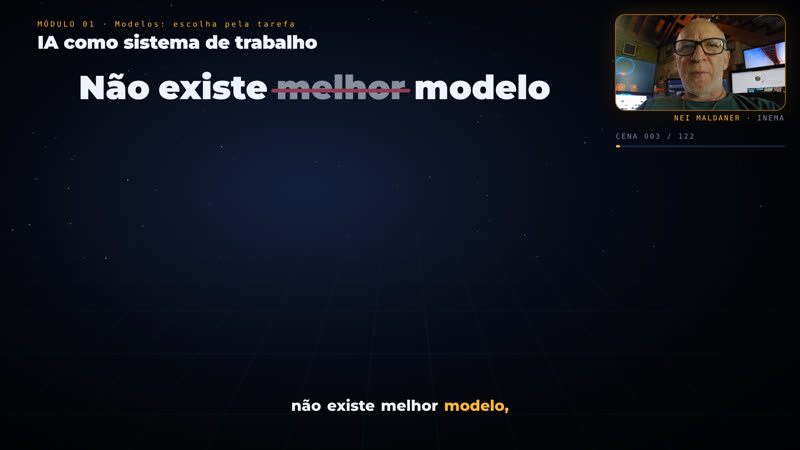
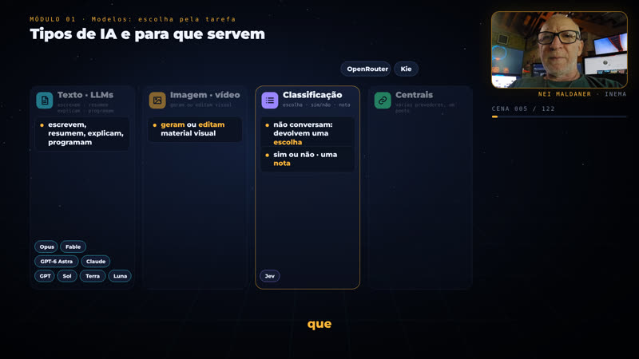

The process used for Astra and OSWork Quick, organized to produce new explainers with an avatar, illustrations, and captions.

Scripting, generation, assembly, and delivery each have their own statuses and files.
Each topic points to its source and scenes. OSWork covers all 48 topics, examples, and exercises.
The approved HeyGen template preserves the avatar and voice. Illustrations follow the measured speech timings.
Audio, duration, captions, and playback are checked before the MP4, player, and notice in bot v3.
Scripts handle repetitive steps. Editorial and visual reviews happen before scaling up.
This version uses the INEMA environment. For another machine, adjust the configuration and adapter paths.
Python, Node, FFmpeg, GitHub CLI, systemd, an authenticated HeyGen profile, and runtime-loaded lookup/transcription credentials.
# command
python3 --version
node --version
ffmpeg -version
gh auth statusThe OSWork example is already prepared. If a run has started, check its status instead of generating another manifest.
Copy the configuration to a new project and review the source, destination, and language. Each step preserves its results.
python3 explica.py --config examples/oswork.json status # shows generation, downloads, render, and publishing
Only before starting generation.
python3 explica.py --config examples/oswork.json prepare
Audio-free preview to review the diagrams.
python3 explica.py preview python3 engine/check_layouts.py
Five persistent services continue running after you close the terminal.
python3 explica.py start
States and logs show what actually happened.
python3 explica.py status journalctl --user -u explica-oswork-completo-submit -n 20 --no-pager
In v2, each scene has a visual script with spoken cues: when the narration says "input, model, output," the flow appears; when it says "there is no best model," the podium crumbles and the criteria radar identifies the right model. The avatar and audio are reused, with no new generation in HeyGen.

hub, pipeline, workflow, radar, podium, trails, comparison, chat, terminal, folder tree, profile, lab, quiz, timeline, and more, in engine/v2/runtime.

The script uses verbatim speech segments; the build resolves each cue against the actual transcript and flags gaps over 10 s. Captions use the spelling from the script.
The v1 engine (explica.py, engine/*.py) stays the same and remains available for productions and improvements. The previous version of OSWork is in the release video-v1.0.0.
# visual script: <output>/visual-v2/pt-bNN.json (see engine/v2/AUTHORING.md) export EXPLICAVIDEOS_CONFIG=examples/oswork-v2.json python3 engine/v2/setup_output.py # reuses avatar, transcript, and timings from v1 python3 engine/v2/build_block.py 1 --strict # cues → timings; 0 warnings engine/v2/run_lane.sh 1 2 3 # check + render verified per block python3 engine/assemble_languages.py && python3 engine/publish_finished.py
Everything Explicavideos has produced so far: 8 productions and over 90 assembled videos, with Nei's avatar and voice, chapters, and captions.
Status on 2026-09-29. Each video is published as soon as it passes the checks.